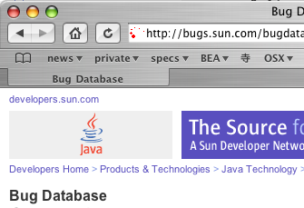
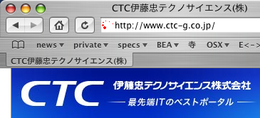
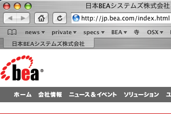

« スーパーマン | メイン | Son of the Mask »
2005年02月24日
まったく同じfavicon、似ているロゴ
SunのbugdatabaseとCTCのホームページのfaviconは全く同じ！
なんかのhtmlエディタのデフォルトなのだろうか、それとも・・・・それとも！？！?

Sun の bugdatabase より引用※
http://bugs.sun.com/bugdatabase/index.jsp

CTCのfavicon、ホームページより引用※
http://www.ctc-g.co.jp/

BEAのロゴ、ホームページより引用※
http://jp.bea.com/
※ 画像中のロゴ、会社名、favicon 等は(恐らく)各社の商標または登録商標です
一応ハッシュを調べてみる
$ md5 /bugparadefavicon.ico
MD5 (/bugparadefavicon.ico) = b25dbe60830705d98ba3aaf0568c456a
$ md5 /ctc-gfavicon.ico
MD5 (/ctc-gfavicon.ico) = b25dbe60830705d98ba3aaf0568c456a
まるで一緒。
投稿者 yusuke : 2005年02月24日 11:11
トラックバック
このエントリーのトラックバックURL:
http://yusuke.homeip.net/diary/mt/mt-tb.cgi/186
コメント
iP○anetのfaviconかと...どこのWebサーバ使っているかわかりますね。
投稿者 kurolog : 2005年03月04日 07:12
おぉ、そうなのか。謎がとけてスッキリ！ありがとうございます。
投稿者 裕介 : 2005年03月06日 21:20